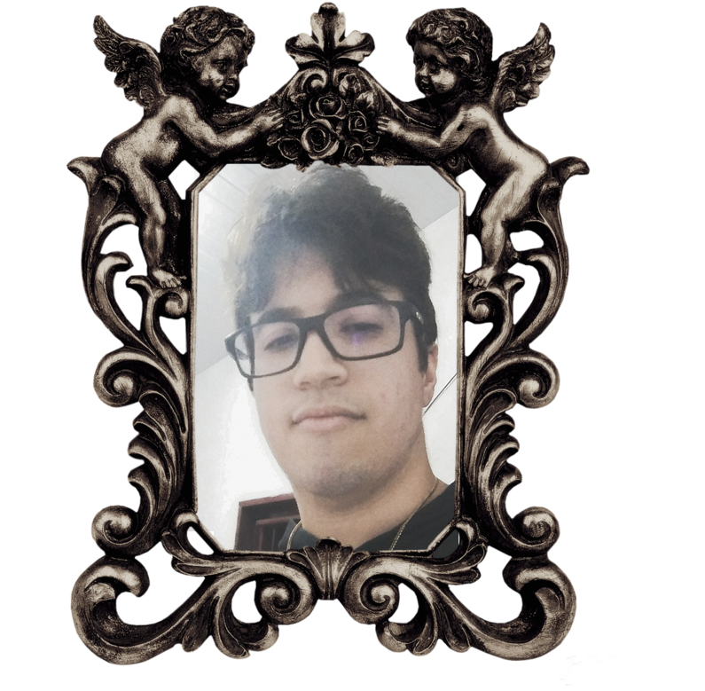

Ol√°!üëã Me chamo Nathan, tenho 19 anos e sou de Fortaleza, Cear√° e sou desenvolvedor Front End Jr. (iniciando no ramo). Sempre tive muita afinidade com a √°rea tecnol√≥gica, desde muito cedo tive contato com jogos e com computa√ß√£o e acabei me identificando bastante e, desde ent√£o criei uma paix√£o muito forte por jogos digitais e por coisas relacionadas √° computa√ß√£o e Design. A alguns anos comecei a estudar sobre Design Gr√°fico, e obtive conhecimentos consider√°veis principalmente na √°rea de Edi√ß√£o de fotos e v√≠deos.
Apesar de nunca ter feito nada que fosse relacionado ao mundo da programação, neste ano (de 2022) iniciei o curso de Análise e Desenvolvimento de Sistemas(atualmente me encontro no 2 semestre) onde então dei meu primeiro grande passo no mundo da programação e então, acabei que por me identificando bastante (se não 100%) com a área de Front-End;
Ainda n√£o obtive experi√™ncia no mercado de trabalho, mas desde ent√£o estou me esfor√ßando para me aperfei√ßoar mais e mais a cada dia para poder finalmente algum dia me inserir na √°rea de Desenvolvimento Web. Uma outra paix√£o/sonho que espero um dia realizar √© poder, quem sabe, desenvolver jogos digitais, que √© sem d√∫vida uma das minhas maiores paix√µes, juntamente agora com a √°rea da programa√ß√£o. Sei que o futuro reserva-me muitos desafios, mas sou um rapaz muito esfor√ßado, e, apesar de ter pouca experi√™ncia na √°rea e de n√£o poder ter tido ainda a primeira oportunidade real, a cada dia mais, com garra, for√ßa, e otimismo venho me preparando e me aperfei√ßoando cada vez mais para poder realizar esse feito de me tornar um dia um Desenvolvedor Front-End!üòÑ